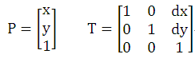
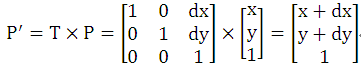
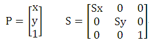
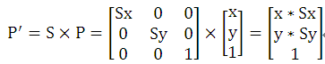
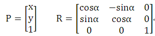
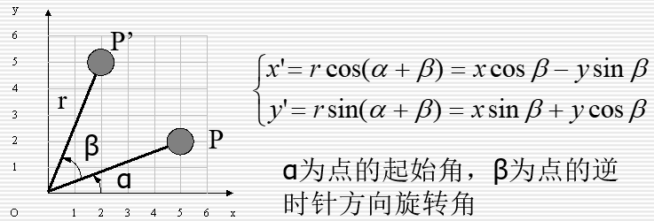
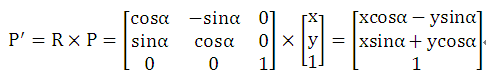
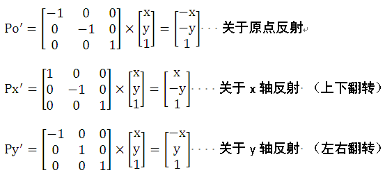

在计算机图形学中，矩阵乘法有着很好的应用。图形的变换可以通过构造相应的矩阵进行计算来完成。
我们知道，平面上的元素，就是点、线、面，而线就是由一个个点组成的，面是由一条条线组成的，所以归根结底，平面上所有的图形都是由点组成的。在坐标系中，一个点就是由一对x，y值组成的，p = {x, y}。在平面上，过两点间的，可以画一条直线，所以我们一般通过 两个点p1, p2可定义一条直线，e = {p1, p2}，而图形呢，则是由众多的点和点之间的的线段组成的。所以，平面上的图形变换，本质是点坐标位置的变换。
在平面中，常用的基本图形变换有以下四种：
1）平移（Translation）。
设点(x,y)水平向右平移dx个单位，垂直向上平移dy个单位。表示点（x,y）的矩阵P和构造的平移变换矩阵T如下：

则点(x,y)的平移后的新位置P'可以通过矩阵乘法计算出来。

2）缩放（Scale）。
设点(x,y)在水平方向和垂直方向的缩放比例分别为Sx和Sy。表示点（x,y）的矩阵P和构造的缩放变换矩阵S如下：

则点(x,y)的缩放后的新位置P'可以通过矩阵乘法计算出来。

3）旋转（Rotation）。
设点(x,y)绕原点逆时针旋转α角度。表示点（x,y）的矩阵P和构造的旋转变换矩阵R如下：

旋转矩阵的构造原理参见下图。

则点(x,y)绕原点逆时针旋转后的新位置P'可以通过矩阵乘法计算出来。

4）反射（Reflect）。
反射变换分为关于原点反射、关于x轴反射和关于y轴反射三种。
点 p(x,y) 关于原点反射后得到的点为po'(-x,-y)。
点 p(x,y) 关于x轴反射后得到的点为px'(x,-y)，也称为上下翻转。
点 p(x,y) 关于x轴反射后得到的点为py'(-x,y)，也称为左右翻转。
三种反射的矩阵计算如下：

【例1】点的变换。
描述
平面上有不超过10000个点，坐标都是已知的，现在可能对所有的点做以下几种操作：
平移一定距离(M)，相对X轴上下翻转(X)，相对Y轴左右翻转(Y)，坐标缩小或放大一定的倍数(S)，所有点对坐标原点逆时针旋转一定角度(R)。
操作的次数不超过10000次，求最终所有点的坐标。
输入
测试数据的第一行是两个整数N,M，分别表示点的个数与操作的个数(N,M<=10000)
随后的一行有N对数对，每个数对的第一个数表示一个点的x坐标，第二个数表示y坐标，这些点初始坐标大小绝对值不超过100。
随后的M行，每行代表一种操作，行首是一个字符：
首字符如果是M,则表示平移操作，该行后面将跟两个数x,y，表示把所有点按向量(x,y)平移;
首字符如果是X，则表示把所有点相对于X轴进行上下翻转;
首字符如果是Y，则表示把所有点相对于Y轴进行左右翻转;
首字符如果是S，则随后将跟一个数P,表示坐标放大P倍;
首字符如果是R，则随后将跟一个数A,表示所有点相对坐标原点逆时针旋转一定的角度A(单位是度)
输出
每行输出两个数，表示一个点的坐标(对结果四舍五入到小数点后1位，输出一位小数位）
点的输出顺序应与输入顺序保持一致
样例输入
2 5
1.0 2.0 2.0 3.0
X
Y
M 2.0 3.0
S 2.0
R 180
样例输出
-2.0 -2.0
0.0 0.0
（1）编程思路。
直接按前面的介绍内容，分别构造5类变换矩阵。定义矩阵ans初始为单位矩阵。然后每输入m种操作中的一种时，根据操作类型构造相应的变换矩阵temp，然后ans右乘temp，即ans=temp*ans。输入完m种操作后，得到的ans矩阵就是每个点的变换矩阵，进行变换矩阵与点的矩阵乘法就可以得到每个点的最终坐标。
（2）源程序。
#include <stdio.h>
#include <string.h>
#include <math.h>
#define PI acos(-1.0)
#define MAXN 10005
struct Matrix
{
double mat[4][4]; // 存储矩阵中各元素
};
struct Point
{
double x ,y ;
};
Matrix matMul(Matrix a ,Matrix b,int n)
{
Matrix c;
memset(c.mat,0,sizeof(c.mat));
int i,j,k;
for (k = 1; k<=n ; k++)
for (i=1 ;i<=n ; i++)
if (a.mat[i][k]!=0)
for (j = 1 ;j<=n ;j++)
c.mat[i][j] = (c.mat[i][j] + a.mat[i][k] * b.mat[k][j]) ;
return c;
}
int main()
{
char ch ;
Point p[MAXN];
Matrix ans,temp;
double a ;
int n,m,i,j;
scanf("%d%d",&n,&m);
for (i=0 ;i<n;i++)
scanf("%lf%lf" ,&p[i].x ,&p[i].y);
memset(ans.mat,0,sizeof(ans.mat)); // 初始为单位阵
ans.mat[1][1]=ans.mat[2][2]=ans.mat[3][3]=1;
for (i=0 ;i<m;i++)
{
memset(temp.mat,0,sizeof(temp.mat)); // 初始为单位阵
temp.mat[1][1]=temp.mat[2][2]=temp.mat[3][3]=1;
getchar();
scanf("%c",&ch);
if (ch == 'M') // 平移
scanf("%lf%lf" ,&temp.mat[1][3] ,&temp.mat[2][3]);
else if (ch == 'X') // 相对X轴上下翻转
temp.mat[2][2]=-1;
else if (ch == 'Y') // 相对于Y轴左右翻转
temp.mat[1][1] = -1 ;
else if (ch == 'S') // 坐标放大P倍
{
scanf("%lf" ,&temp.mat[1][1]) ;
temp.mat[2][2] = temp.mat[1][1] ;
}
else if (ch == 'R') // 相对坐标原点逆时针旋转一定的角度A
{
scanf("%lf" ,&a) ;
a = (a*PI)/180.0 ;
temp.mat[1][1] = temp.mat[2][2] = cos(a) ;
temp.mat[1][2] = -sin(a) ;
temp.mat[2][1] = sin(a) ;
}
ans=matMul(temp,ans,3);
}
for (i=0 ;i<n ; i++)
{
for (j=1 ;j<=2; j++)
{
if (j!=1) printf(" ");
printf("%.1lf" ,(ans.mat[j][1]*p[i].x+ans.mat[j][2]*p[i].y+ans.mat[j][3]));
}
printf("\n");
}
return 0 ;
}
【例2】openGL （HDU 3320）。
Problem Description
Jiaoshou selected a course about “openGL” this semester. He was quite interested in modelview, which is a part of “openGL”. Just using three functions, it could make the model to move, rotate and largen or lessen. But he was puzzled with the theory of the modelview. He didn’t know a vertex after several transformations where it will be.
Now, He tells you the position of the vertex and the transformations. Please help Jiaoshou find the position of the vertex after several transformations.
Input
The input will start with a line giving the number of test cases, T.
Each case will always begin with “glBegin(GL_POINTS);”.Then the case will be followed by 5 kinds of function.
1. glTranslatef(x,y,z);
This function will translate the vertex(x’,y’,z’) to vertex(x+x’,y+y’,z+z’).
2. glRotatef(angle,x,y,z);
This function will turn angle radians counterclockwise around the axis (0,0,0)->(x,y,z).
3. glScalef(x,y,z);
This function wiil translate the vertex(x’,y’,z’) to vertex(x*x’,y*y’,z*z’).
4. glVertex3f(x,y,z);
This function will draw an initial vertex at the position(x,y,z). It will only appear once in one case just before “glEnd();”. In openGL, the transformation matrices are right multiplied by vertex matrix. So you should do the transformations in the reverse order.
5. glEnd();
This function tells you the end of the case.
In this problem angle,x,y,z are real numbers and range from -50.0 to 50.0. And the number of functions in each case will not exceed 100.
Output
For each case, please output the position of the vertex after several transformations x,y,z in one line rounded to 1 digits after the decimal point , separated with a single space. We guarantee that x,y,z are not very large.
Sample Input
1
glBegin(GL_POINTS);
glScalef(2.0,0.5,3.0);
glTranslatef(0.0,1.0,0.0);
glVertex3f(1.0,1.0,1.0);
glEnd();
Sample Output
2.0 1.0 3.0
Hint
In this sample, we first let the vertex do “glTranslatef(x,y,z);” this function, then do “glScalef(x,y,z)”.
（1）编程思路。
题目的意思是：给出三维空间一个点的坐标，对它进行多种变换（平移、缩放、绕过原点的任意轴旋转），输出它的最终坐标。需要注意的是它给出各变换的操作顺序是反过来的（见题目Hint）。
根据输入构造好三维坐标点的平移、缩放和旋转转换矩阵，用矩阵乘法乘起来就是最终坐标。
（2）源程序。
#include <stdio.h>
#include <math.h>
#include <string.h>
int cnt;
char opstr[105][105];
struct Matrix
{
double mat[5][5]; // 存储矩阵中各元素
};
Matrix matMul(Matrix a ,Matrix b,int n)
{
Matrix c;
memset(c.mat,0,sizeof(c.mat));
int i,j,k;
for (k = 1; k<=n ; k++)
for (i=1 ;i<=n ; i++)
if (a.mat[i][k]!=0)
for (j = 1 ;j<=n ;j++)
c.mat[i][j] = (c.mat[i][j] + a.mat[i][k] * b.mat[k][j]);
return c;
}
Matrix translate(Matrix p, double x, double y, double z) // 平移
{
Matrix tmp;
memset(tmp.mat,0,sizeof(tmp.mat));
for (int i=1;i<=4;i++)
tmp.mat[i][i]=1;
tmp.mat[1][4] = x;
tmp.mat[2][4] = y;
tmp.mat[3][4] = z;
p=matMul(tmp,p,4);
return p;
}
Matrix scale(Matrix p, double a, double b, double c) //缩放
{
Matrix tmp;
memset(tmp.mat,0,sizeof(tmp.mat));
for (int i=1;i<=4;i++)
tmp.mat[i][i]=1;
tmp.mat[1][1] = a;
tmp.mat[2][2] = b;
tmp.mat[3][3] = c;
p=matMul(tmp,p,4);
return p;
}
Matrix rotate(Matrix p, double x, double y, double z, double d) // 旋转
{
double di = sqrt(x*x+y*y+z*z); // 单位化
x/=di, y/=di, z/=di;
Matrix tmp;
memset(tmp.mat,0,sizeof(tmp.mat));
tmp.mat[1][1] = (1-cos(d))*x*x + cos(d);
tmp.mat[1][2] = (1-cos(d))*x*y - z*sin(d);
tmp.mat[1][3] = (1-cos(d))*x*z + y*sin(d);
tmp.mat[2][1] = (1-cos(d))*x*y + z*sin(d);
tmp.mat[2][2] = (1-cos(d))*y*y + cos(d);
tmp.mat[2][3] = (1-cos(d))*y*z - x*sin(d);
tmp.mat[3][1] = (1-cos(d))*x*z - y*sin(d);
tmp.mat[3][2] = (1-cos(d))*y*z + x*sin(d);
tmp.mat[3][3] = (1-cos(d))*z*z + cos(d);
tmp.mat[4][4]=1;
p=matMul(tmp,p,4);
return p;
}
Matrix work()
{
Matrix p;
int i;
double x,y,z,d;
memset(p.mat,0,sizeof(p.mat));
for (i=1;i<=4;i++)
p.mat[i][i]=1;
for (i=cnt-3;i>0;i--)
{
if (opstr[i][2]=='T')
{
sscanf(opstr[i],"glTranslatef(%lf,%lf,%lf);",&x,&y,&z);
p=translate(p,x,y,z);
}
else if (opstr[i][2]=='S')
{
sscanf(opstr[i],"glScalef(%lf,%lf,%lf);",&x,&y,&z);
p=scale(p,x,y,z);
}
else if (opstr[i][2]=='R')
{
sscanf(opstr[i],"glRotatef(%lf,%lf,%lf,%lf);",&d,&x,&y,&z);
p=rotate(p,x,y,z,d);
}
}
return p;
}
int main()
{
int t;
double x,y,z;
scanf("%d",&t);
while(t--)
{
cnt=0;
while(1)
{
scanf("%s",opstr[cnt++]);
if (opstr[cnt-1][2]=='E')
break;
}
Matrix ans=work();
sscanf(opstr[cnt-2], "glVertex3f(%lf,%lf,%lf);",&x,&y,&z);
printf("%.1lf %.1lf %.1lf\n",x*ans.mat[1][1]+y*ans.mat[1][2]+z*ans.mat[1][3]+ans.mat[1][4],
x*ans.mat[2][1]+y*ans.mat[2][2]+z*ans.mat[2][3]+ans.mat[2][4],
x*ans.mat[3][1]+y*ans.mat[3][2]+z*ans.mat[3][3]+ans.mat[3][4]);
}
return 0;
}
弄明白了本例，可以顺手将HDU 4087 “ALetter to Programmers”做一下，以加深对三维几何变换的理解。HDU 4087比本例复杂一些，因为存在某个指定的平移、缩放或旋转操作集重复执行，因此会用到矩阵快速幂运算。
下面给出HDU 4087的源程序供参考。需要说明的是，这个源程序在HDU上用C++提交，一直Wrong Answer。采用G++提交可以Accepted。到现在我也没弄明白，所以仅供大家参考了。
（3）HDU 4087的参考源程序。
#include <stdio.h>
#include <math.h>
#include <string.h>
#define eps 1e-6
#define pi acos(-1.0)
struct Matrix
{
double mat[5][5]; // 存储矩阵中各元素
};
Matrix matMul(Matrix a ,Matrix b,int n)
{
Matrix c;
memset(c.mat,0,sizeof(c.mat));
int i,j,k;
for (k = 1; k<=n ; k++)
for (i=1 ;i<=n ; i++)
if (a.mat[i][k]!=0)
for (j = 1 ;j<=n ;j++)
c.mat[i][j] = (c.mat[i][j] + a.mat[i][k] * b.mat[k][j]);
return c;
}
Matrix quickMatPow(Matrix a ,int n,int b) // n阶矩阵a快速b次幂
{
Matrix c;
memset(c.mat ,0 ,sizeof(c.mat));
int i;
for (i = 1 ;i <= n ;i++)
c.mat[i][i] = 1;
while (b!=0)
{
if (b & 1)
c = matMul(c ,a ,n); // c=c*a;
a = matMul(a ,a ,n); // a=a*a
b /= 2;
}
return c;
}
Matrix translate(Matrix p, double x, double y, double z) // 平移
{
Matrix tmp;
memset(tmp.mat,0,sizeof(tmp.mat));
for (int i=1;i<=4;i++)
tmp.mat[i][i]=1;
tmp.mat[1][4] = x;
tmp.mat[2][4] = y;
tmp.mat[3][4] = z;
p=matMul(tmp,p,4);
return p;
}
Matrix scale(Matrix p, double a, double b, double c) //缩放
{
Matrix tmp;
memset(tmp.mat,0,sizeof(tmp.mat));
for (int i=1;i<=4;i++)
tmp.mat[i][i]=1;
tmp.mat[1][1] = a;
tmp.mat[2][2] = b;
tmp.mat[3][3] = c;
p=matMul(tmp,p,4);
return p;
}
Matrix rotate(Matrix p, double x, double y, double z, double d) // 旋转
{
d = d/180*pi;
double di = sqrt(x*x+y*y+z*z); //单位化
x/=di, y/=di, z/=di;
Matrix tmp;
memset(tmp.mat,0,sizeof(tmp.mat));
tmp.mat[1][1] = (1-cos(d))*x*x + cos(d);
tmp.mat[1][2] = (1-cos(d))*x*y - z*sin(d);
tmp.mat[1][3] = (1-cos(d))*x*z + y*sin(d);
tmp.mat[2][1] = (1-cos(d))*x*y + z*sin(d);
tmp.mat[2][2] = (1-cos(d))*y*y + cos(d);
tmp.mat[2][3] = (1-cos(d))*y*z - x*sin(d);
tmp.mat[3][1] = (1-cos(d))*x*z - y*sin(d);
tmp.mat[3][2] = (1-cos(d))*y*z + x*sin(d);
tmp.mat[3][3] = (1-cos(d))*z*z + cos(d);
tmp.mat[4][4]=1;
p=matMul(tmp,p,4);
return p;
}
Matrix work(int n)
{
Matrix p;
int i;
double x,y,z,d;
memset(p.mat,0,sizeof(p.mat));
for (i=1;i<=4;i++)
p.mat[i][i]=1;
char s[100];
while (1)
{
scanf("%s", s);
if (strcmp(s,"translate")==0)
{
scanf("%lf%lf%lf",&x,&y,&z);
p=translate(p,x,y,z);
continue;
}
if (strcmp(s,"scale")==0)
{
scanf("%lf%lf%lf",&x,&y,&z);
p=scale(p,x,y,z);
continue;
}
if (strcmp(s,"rotate")==0)
{
scanf("%lf%lf%lf%lf",&x,&y,&z,&d);
p=rotate(p,x,y,z,d);
continue;
}
if (strcmp(s,"repeat")==0)
{
int n1;
scanf("%d", &n1);
p = matMul(work(n1),p,4);
}
if (strcmp(s,"end")==0)
{
p=quickMatPow(p,4,n);
return p;
}
}
}
int main()
{
int n,i;
Matrix p;
double a[4];
double tx,ty,tz,td;
while(scanf("%d", &n) && n!=0)
{
p=work(1);
while (n--)
{
scanf("%lf%lf%lf",&a[1],&a[2],&a[3]);
tx=a[1],ty=a[2],tz=a[3],td=1;
for (i=1; i<=4;i++)
{
a[i] =p.mat[i][1]*tx +p.mat[i][2]*ty +p.mat[i][3]*tz + p.mat[i][4]*td;
if (fabs(a[i])<eps) a[i]=0.0;
}
printf("%.2lf %.2lf %.2lf\n",a[1],a[2],a[3]);
}
printf("\n");
}
return 0;
}